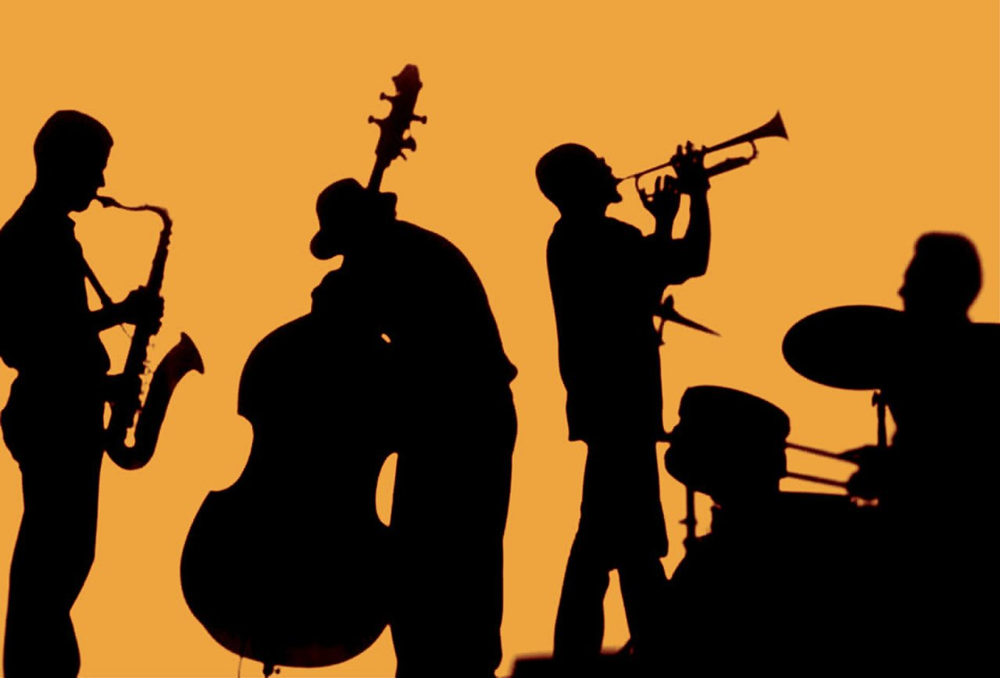
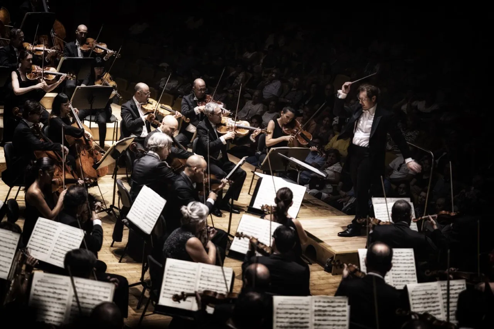

Los géneros musicales son categorías que agrupan diferentes estilos de música según sus características sonoras, culturales e históricas. Cada género tiene sus propias particularidades, influencias y raíces, que reflejan aspectos sociales, emocionales y hasta espirituales de la cultura de la que provienen. Desde los ritmos profundos del blues y el jazz hasta la energía vibrante del rock, el pop y el hip-hop, cada género musical es una forma única de expresión que ha evolucionado y se ha fusionado con otros estilos a lo largo del tiempo, dando lugar a nuevos sonidos y tendencias que siguen enriqueciendo el panorama musical. Hablar de géneros musicales es sumergirse en un viaje a través del tiempo y el espacio, descubriendo cómo la música ha influido y se ha adaptado a los cambios en la sociedad.
| GÉNEROS MUSICALES | ||||||
|---|---|---|---|---|---|---|
| Nombres | Caracteristica sonora | Caracteristica culturales | Caracteristica historicas | Influencias y raíces | Imagen | Link Wikipedia |
| Blues | Se caracteriza por un ritmo lento y sincopado, patrones repetitivos y progresiones de acordes, así como el uso expresivo de la voz, a menudo llena de lamentos. Suele incluir guitarra, armónica y piano | Surgió en las comunidades afroamericanas del sur de Estados Unidos a fines del siglo XIX y principios del XX | Se originó en el sur de Estados Unidos a fines del siglo XIX y principios del XX, entre comunidades afroamericanas que trabajaban en condiciones de esclavitud o en extrema pobreza | Sus raíces están en los cantos de trabajo y espirituales afroamericanos del siglo XIX, nacidos en un contexto de esclavitud y opresión en el sur de Estados Unidos | Blues | |
| Jazz | Suena a improvisación y libertad. Usa escalas complejas, acordes disonantes, síncopas y ritmos irregulares | Nacido en Nueva Orleans, el jazz es símbolo de libertad y creatividad. Fue pionero en la integración racial en Estados Unidos, ya que atraía tanto a músicos como a audiencias de diversas culturas y razas | Surgió en Nueva Orleans a principios del siglo XX como una fusión de blues, ragtime y música de bandas | Tiene sus raíces en el blues, el ragtime y la música de bandas de metales |  | Jazz |
| Rock and Roll | Se caracteriza por un ritmo rápido y fuerte, con guitarras eléctricas amplificadas, baterías potentes y una estructura de acordes sencilla | Surgido en los años 50, se convirtió en un símbolo de rebeldía juvenil y rompimiento de normas establecidas | Surgió en los años 50 en Estados Unidos como una mezcla de blues, rhythm and blues y country | Surgió como una fusión de blues, rhythm and blues (R&B) y country, con influencias del gospel y del jazz | Rock and Roll | |
| Música Clásica | Su estructura es compleja y varía desde obras orquestales hasta piezas para solistas | La música clásica es reflejo de la tradición europea y está asociada con las cortes y la nobleza desde el Renacimiento hasta el Romanticismo | Desarrollada en Europa desde el periodo medieval hasta el siglo XIX, con grandes épocas como el Barroco, el Clasicismo y el Romanticismo, cada una con estilos distintos | Las raíces de la música clásica están en las tradiciones medievales europeas, especialmente en el canto gregoriano y la música sacra |  | Música Clásica |
| Hip-Hop | Ritmos fuertes y repetitivos con bases rítmicas de batería (beats), bajos profundos y uso del "sampling" | Surgió en las comunidades afroamericanas y latinas de Nueva York en los años 70, más allá de la música, es un movimiento que incluye el breakdance, el graffiti y el DJing | Surgió en los años 70 en el Bronx, Nueva York, como una respuesta de los jóvenes afroamericanos y latinos a la marginalización y la violencia urbana | Tiene raíces en los ritmos afroamericanos del funk y el soul, y su componente vocal proviene de las tradiciones orales africanas y jamaicanas | Hip-Hop | |
| Música Electrónica | Su sonido es artificial, creado mediante sintetizadores, secuenciadores y efectos | Surgió en Europa y Estados Unidos en los años 70 y 80, desarrollándose como música de club en las décadas siguientes | En los años 70 y 80, con el avance de la tecnología y los sintetizadores, se originaron géneros como el techno y el house en ciudades como Detroit y Chicago, y el electro en Europa | Sus raíces están en la música experimental de mediados del siglo XX y en la música concreta francesa, donde se experimentaba con sonidos sintetizados y grabaciones de audio | Música Electrónica | |